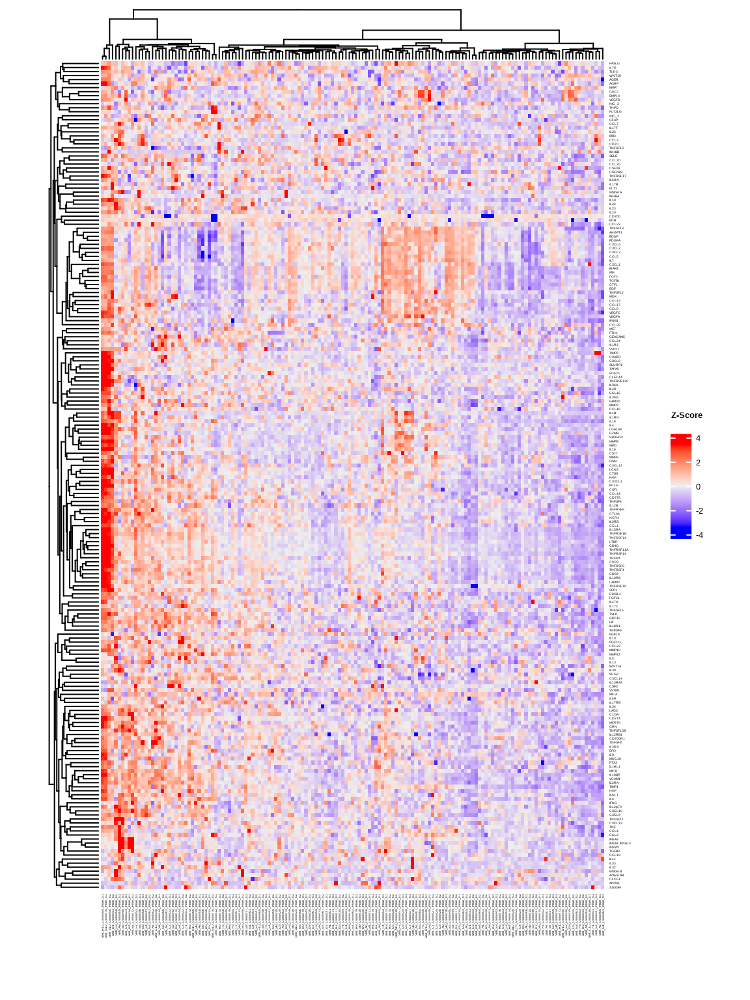
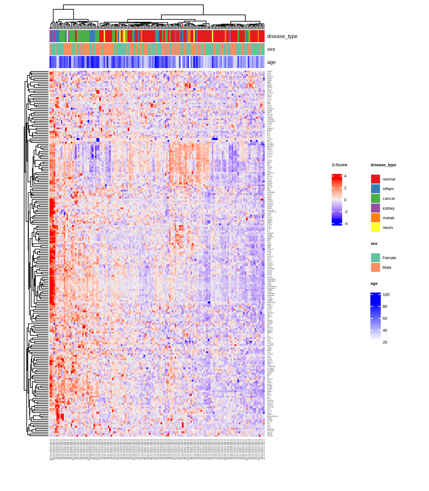
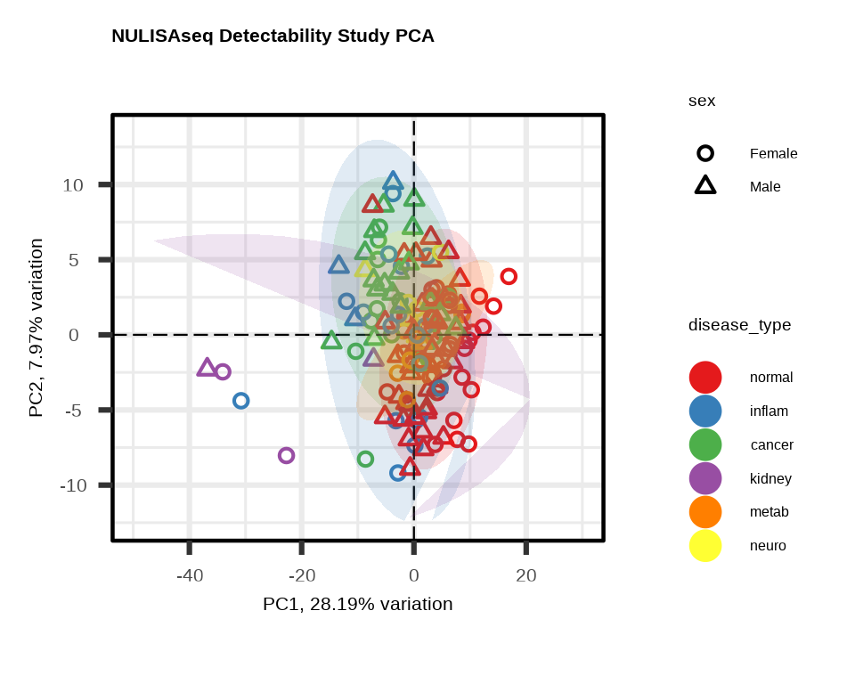
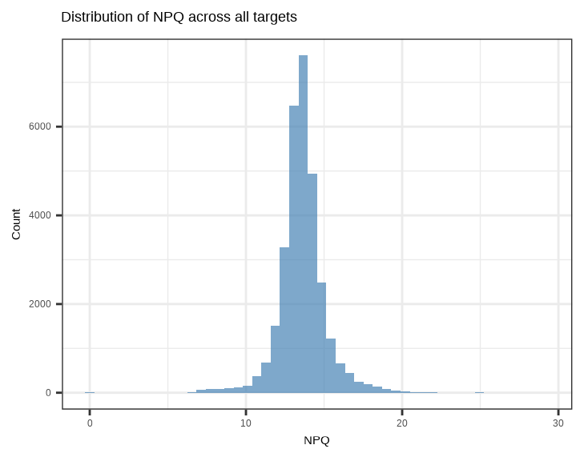
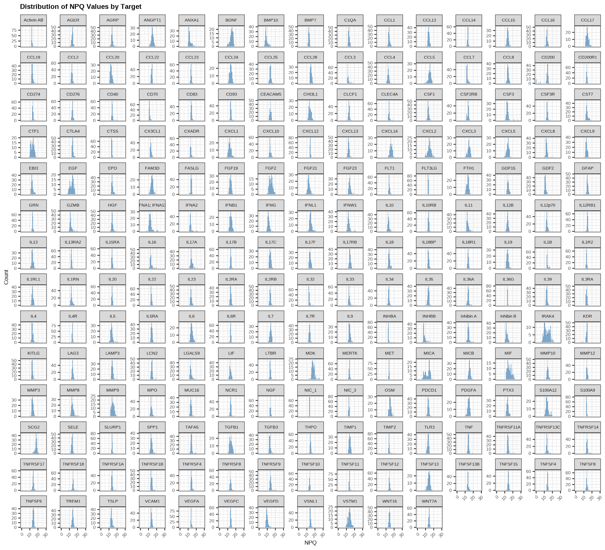
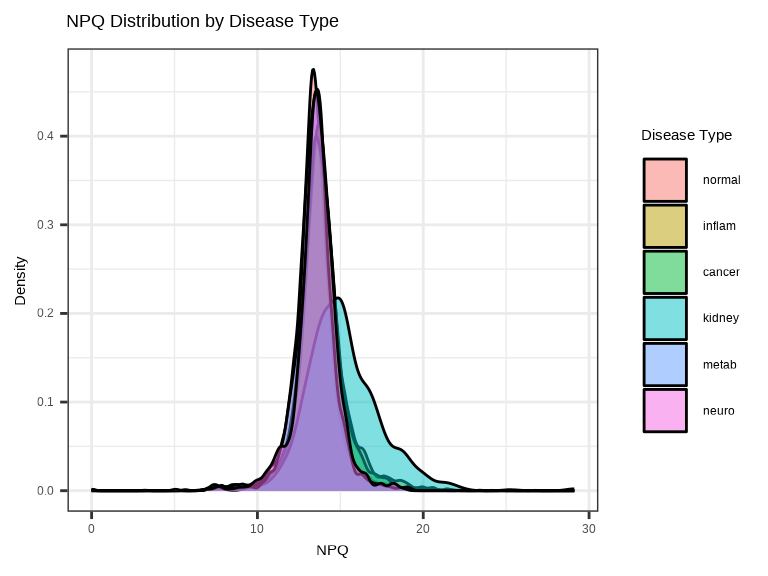
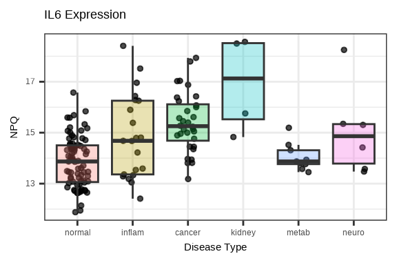
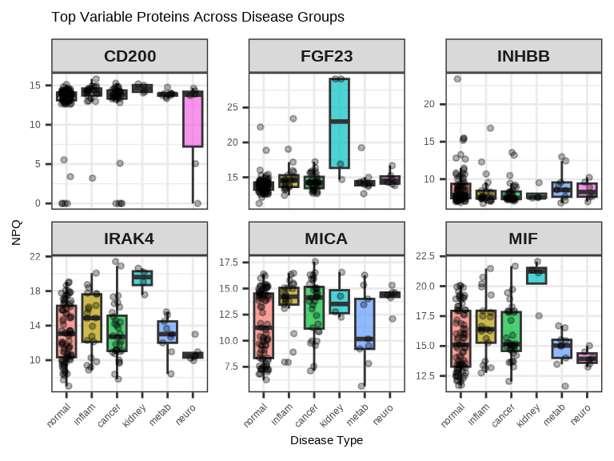
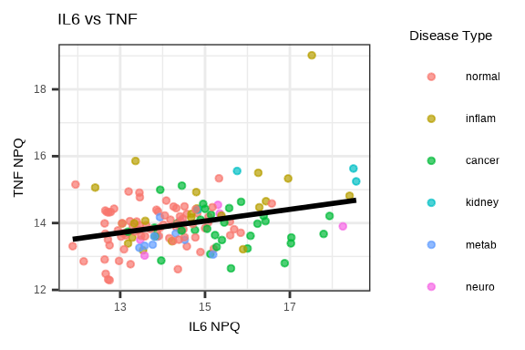

Chapter 3 Visualization
Visualizing proteomic data helps identify patterns, outliers, and biological signals. This chapter covers the main visualization methods in NULISAseqR.
3.1 Why Visualize?
Data visualization helps you:
- Identify sample clusters and outliers
- Assess data quality visually
- Detect batch effects
- Explore biological patterns
- Communicate findings effectively
3.2 Heatmaps
Heatmaps show protein expression patterns across samples and targets. Hierarchical clustering can help organize heatmaps to indicate which samples and targets are most similar to each other.
The generate_heatmap() function:
- Standardizes data by protein (z-scores): centers and scales each protein’s values
- Clusters similar samples and proteins together
- Annotates samples with metadata (disease type, sex, age, etc.)
- Uses
ComplexHeatmapwith automaticRColorBrewercolor palettes
See complete function documentation and additional options, use ?generate_heatmap().
3.2.1 Basic Heatmap
heatmap1 <- generate_heatmap(
data = data$merged$Data_NPQ,
sampleInfo = metadata,
sampleName_var = "SampleName",
sample_subset = sample_list,
row_fontsize = 4
)
3.2.2 Heatmap with Annotations
Add sample annotations to highlight key variables:
heatmap2 <- generate_heatmap(
data = data$merged$Data_NPQ,
sampleInfo = metadata,
sampleName_var = "SampleName",
sample_subset = sample_list,
annotate_sample_by = c("disease_type", "sex", "age"),
row_fontsize = 4
)
3.3 Principal Component Analysis (PCA)
PCA reduces high-dimensional data to its main components of variation.
The generate_pca() function:
- Standardizes data by protein (z-scores): centers and scales each protein’s values
- Performs PCA using
PCAtoolspackage to identify major sources of variation - Creates biplot showing sample relationships in PC space
- Annotates samples with metadata colors and shapes
- Uses automatic
RColorBrewercolor palettes or custom colors
See complete function documentation and additional options, use ?generate_pca().
3.3.1 PCA with Multiple Visual Encodings
Color by one variable, shape by another:
pca2 <- generate_pca(
data = data$merged$Data_NPQ,
plot_title = "NULISAseq Detectability Study PCA",
sampleInfo = metadata,
sampleName_var = "SampleName",
sample_subset = sample_list,
annotate_sample_by = "disease_type", # Color
shape_by = "sex" # Shape
)
3.3.2 Understanding PCA Plots
Axes
- PC1 (x-axis): Captures the most variation in the data
- PC2 (y-axis): Captures the second most variation
- % variance: Shows how much variation each PC explains
Interpretation
- Tight clusters: Samples with similar expression profiles
- Separation: Groups with distinct expression patterns
- Outliers: Samples far from the main cluster
- Batch effects: If clustering by technical variables (plate, batch), indicates unwanted variation
What to Look For
Good signs:
- ✓ Samples cluster by biological group
- ✓ PC1/PC2 explain substantial variance (>20% combined)
- ✓ Clear separation between conditions
Warning signs:
- ✗ Clustering by technical variables (batch, plate)
- ✗ Outliers far from their group
- ✗ No visible separation despite known biology
3.4 Custom Visualizations with ggplot2
For exploratory analysis beyond heatmaps and PCA, create custom plots with ggplot2.
# setting ggplot theme
# custom ggplot theme
custom_theme <- theme_bw() + theme(
panel.background = element_rect(fill='white'),
plot.background = element_rect(fill='transparent', color = NA),
legend.background = element_rect(fill='transparent'),
legend.key = element_rect(fill = "transparent", color = NA)
)
theme_set(custom_theme)
showtext::showtext_auto() ## able to output beta symbol and other special character in pdf3.4.1 NPQ Distribution - Histogram
Check the overall distribution of NPQ values across all samples and proteins:
data_long %>%
filter(SampleName %in% sample_list) %>%
ggplot(aes(x = NPQ)) +
geom_histogram(bins = 50, fill = "steelblue", alpha = 0.7) +
labs(title = "Distribution of NPQ across all targets",
x = "NPQ", y = "Count")
Check the distribution of NPQ values across all samples for each protein:
data_long %>%
filter(SampleName %in% sample_list) %>%
ggplot(aes(x = NPQ)) +
geom_histogram(bins = 50, fill = "steelblue", alpha = 0.7) +
facet_wrap(~ Target, scales = "free_y") +
labs(title = "Distribution of NPQ Values by Target",
x = "NPQ", y = "Count") +
theme(
plot.title = element_text(size = 18, face = "bold"),
plot.subtitle = element_text(size = 16),
axis.title.x = element_text(size = 15),
axis.title.y = element_text(size = 15),
axis.text.x = element_text(size = 12, angle = 45, hjust = 1),
axis.text.y = element_text(size = 12),
strip.text = element_text(size = 11)
)
3.4.2 NPQ Distribution by Group - Density Plot
Compare NPQ distributions between groups to check for systematic differences:
data_long %>%
filter(SampleName %in% sample_list) %>%
ggplot(aes(x = NPQ, fill = disease_type)) +
geom_density(alpha = 0.5) +
labs(title = "NPQ Distribution by Disease Type",
x = "NPQ", y = "Density",
fill = "Disease Type")
3.4.3 Single Protein Across Groups
Examine how a single protein varies across conditions:
# Plot a specific protein across groups
protein_of_interest <- "IL6"
data_long %>%
filter(Target == protein_of_interest, SampleName %in% sample_list) %>%
ggplot(aes(x = disease_type, y = NPQ, fill = disease_type)) +
geom_jitter(width = 0.2, alpha = 0.7, size = 1) +
geom_boxplot(alpha = 0.3, outlier.shape = NA) +
labs(title = paste(protein_of_interest, "Expression"),
x = "Disease Type", y = "NPQ") +
theme(legend.position = "none")
3.4.4 Multiple Proteins Across Groups
Compare several proteins simultaneously using facets:
# Select top 6 proteins by variance
protein_variance <- apply(data$merged$Data_NPQ[, sample_list], 1, var, na.rm = TRUE)
top_proteins <- names(sort(protein_variance, decreasing = TRUE)[1:6])
# Plot multiple proteins
data_long %>%
filter(Target %in% top_proteins, SampleName %in% sample_list) %>%
ggplot(aes(x = disease_type, y = NPQ, fill = disease_type)) +
geom_boxplot(alpha = 0.7, outlier.shape = NA) +
geom_jitter(width = 0.2, alpha = 0.3, size = 1) +
facet_wrap(~Target, scales = "free_y", ncol = 3) +
labs(title = "Top Variable Proteins Across Disease Groups",
x = "Disease Type", y = "NPQ") +
theme(legend.position = "none",
axis.text.x = element_text(angle = 45, hjust = 1),
strip.text = element_text(size = 16, face = "bold"))
3.4.5 Protein-Protein Correlation
# Select two proteins to compare
protein1 <- "IL6"
protein2 <- "TNF"
plot_data <- data_long %>%
filter(Target %in% c(protein1, protein2), SampleName %in% sample_list) %>%
select(SampleName, Target, NPQ, disease_type) %>%
pivot_wider(names_from = Target, values_from = NPQ)
ggplot(plot_data, aes(x = .data[[protein1]], y = .data[[protein2]],
color = disease_type)) +
geom_point(size = 1, alpha = 0.7) +
geom_smooth(method = "lm", se = FALSE, color = "black", linetype = 1) +
labs(title = paste(protein1, "vs", protein2),
x = paste(protein1, "NPQ"),
y = paste(protein2, "NPQ"),
color = "Disease Type")
3.5 Saving Plots
Both generate_heatmap() and generate_pca() have built-in options to save plots directly.
Save Heatmap
# Automatically saves to file
generate_heatmap(
data = data$merged$Data_NPQ,
sampleInfo = metadata,
sampleName_var = "SampleName",
sample_subset = sample_list,
annotate_sample_by = c("disease_type", "sex", "age"),
output_dir = "figures", # Where to save
plot_name = "expression_heatmap.pdf",# Filename (PDF, PNG, JPG, SVG)
row_fontsize = 5,
plot_width = 12, # Width in inches
plot_height = 10 # Height in inches
)Supported formats: PDF, PNG, JPG, SVG (determined by file extension)
Save PCA
# Automatically saves to file
generate_pca(
data = data$merged$Data_NPQ,
sampleInfo = metadata,
sampleName_var = "SampleName",
sample_subset = sample_list,
annotate_sample_by = "disease_type",
output_dir = "figures", # Where to save
plot_name = "pca.png", # Filename (PDF, PNG, JPG, SVG)
plot_title = "NULISAseq Detectability Study PCA",
plot_width = 8, # Width in inches
plot_height = 6 # Height in inches
)Supported formats: PDF, PNG, JPG, SVG (determined by file extension)
3.6 Visualization Best Practices
Design Principles
- Choose appropriate color schemes (consider color-blind friendly palettes)
- Use clear, descriptive titles
- Label axes properly with units
- Include legends when needed
- Choose appropriate plot types for your data
Interpretation
- View plots in context of experimental design
- Look for biological signals and technical artifacts
- Compare results across multiple visualization methods
- Document interesting patterns for follow-up
Common Issues
- ✗ Plotting too many groups (hard to distinguish) – consider multi-panel plots
- ✗ Poor color choices (e.g., red/green for color-blind viewers) – use color-blind friendly palettes
- ✗ Overplotting (too many points overlapping) – use transparent colors by setting
alpha< 1 - ✗ Missing axis labels or legends – be sure to add these!
3.7 Complete Visualization Workflow
# Load libraries
library(NULISAseqR)
library(tidyverse)
# Set up output directory
out_dir <- "figures"
dir.create(out_dir, showWarnings = FALSE)
# Filter to samples of interest
sample_list <- metadata %>%
filter(SampleMatrix == "Plasma") %>%
pull(SampleName)
# 1. Generate heatmap with annotations
generate_heatmap(
data = data$merged$Data_NPQ,
output_dir = out_dir,
plot_name = "expression_heatmap.pdf",
sampleInfo = metadata,
sampleName_var = "SampleName",
sample_subset = sample_list,
annotate_sample_by = c("disease_type", "sex", "age"),
row_fontsize = 5,
plot_width = 12,
plot_height = 10
)
# 2. Generate PCA plot
generate_pca(
data = data$merged$Data_NPQ,
output_dir = out_dir,
plot_name = "pca_plot.pdf",
plot_title = "NULISAseq Detectability Study PCA",
sampleInfo = metadata,
sampleName_var = "SampleName",
sample_subset = sample_list,
annotate_sample_by = "disease_type",
shape_by = "sex",
plot_width = 8,
plot_height = 6
)
# setting ggplot theme
# custom ggplot theme
custom_theme <- theme_bw() + theme(
panel.background = element_rect(fill='white'),
plot.background = element_rect(fill='transparent', color = NA),
legend.background = element_rect(fill='transparent'),
legend.key = element_rect(fill = "transparent", color = NA)
)
theme_set(custom_theme)
showtext::showtext_auto() ## able to output beta symbol and other special character in pdf
# 3. NPQ distribution histogram
p_hist <- data_long %>%
filter(SampleName %in% sample_list) %>%
ggplot(aes(x = NPQ)) +
geom_histogram(bins = 50, fill = "steelblue", alpha = 0.7) +
labs(title = "Distribution of NPQ Values",
x = "NPQ", y = "Count")
ggsave(file.path(out_dir, "npq_histogram.pdf"), p_hist,
width = 7, height = 5)
# 4. NPQ density by disease type
p_density <- data_long %>%
filter(SampleName %in% sample_list) %>%
ggplot(aes(x = NPQ, fill = disease_type)) +
geom_density(alpha = 0.5) +
labs(title = "NPQ Distribution by Disease Type",
x = "NPQ", y = "Density",
fill = "Disease Type")
ggsave(file.path(out_dir, "npq_density.pdf"), p_density,
width = 8, height = 5)
# 5. Single protein boxplot
protein_of_interest <- "IL6"
p_single <- data_long %>%
filter(Target == protein_of_interest, SampleName %in% sample_list) %>%
ggplot(aes(x = disease_type, y = NPQ, fill = disease_type)) +
geom_boxplot(alpha = 0.7, outlier.shape = NA) +
geom_jitter(width = 0.2, alpha = 0.6, size = 2) +
labs(title = paste(protein_of_interest, "Expression Across Groups"),
x = "Disease Type", y = "NPQ") +
theme(legend.position = "none",
axis.text.x = element_text(angle = 45, hjust = 1))
ggsave(file.path(out_dir, paste0(protein_of_interest, "_boxplot.pdf")),
p_single, width = 7, height = 5)
# 6. Multiple proteins facet plot
protein_variance <- apply(data$merged$Data_NPQ[, sample_list], 1,
var, na.rm = TRUE)
top_proteins <- names(sort(protein_variance, decreasing = TRUE)[1:6])
p_multi <- data_long %>%
filter(Target %in% top_proteins, SampleName %in% sample_list) %>%
ggplot(aes(x = disease_type, y = NPQ, fill = disease_type)) +
geom_boxplot(alpha = 0.7, outlier.shape = NA) +
geom_jitter(width = 0.2, alpha = 0.3, size = 1) +
facet_wrap(~Target, scales = "free_y", ncol = 3) +
labs(title = "Top Variable Proteins Across Disease Groups",
x = "Disease Type", y = "NPQ") +
theme(legend.position = "none",
axis.text.x = element_text(angle = 45, hjust = 1),
strip.text = element_text(size = 12, face = "bold"))
ggsave(file.path(out_dir, "top_proteins_facet.pdf"), p_multi,
width = 10, height = 8)
# 7. Protein correlation plot
protein1 <- "IL6"
protein2 <- "TNF"
plot_data <- data_long %>%
filter(Target %in% c(protein1, protein2), SampleName %in% sample_list) %>%
select(SampleName, Target, NPQ, disease_type) %>%
pivot_wider(names_from = Target, values_from = NPQ) %>%
na.omit()
p_corr <- ggplot(plot_data,
aes(x = .data[[protein1]], y = .data[[protein2]],
color = disease_type)) +
geom_point(size = 3, alpha = 0.7) +
geom_smooth(method = "lm", se = TRUE, color = "black",
linetype = "dashed", linewidth = 0.5) +
labs(title = paste(protein1, "vs", protein2),
x = paste(protein1, "NPQ"),
y = paste(protein2, "NPQ"),
color = "Disease Type")
ggsave(file.path(out_dir, "protein_correlation.pdf"), p_corr,
width = 7, height = 6)
cat("\n✓ All visualizations saved to:", out_dir, "\n")
cat("\nGenerated files:\n")
cat(" - expression_heatmap.pdf\n")
cat(" - pca_plot.pdf\n")
cat(" - npq_histogram.pdf\n")
cat(" - npq_density.pdf\n")
cat(" - IL6_boxplot.pdf\n")
cat(" - top_proteins_facet.pdf\n")
cat(" - protein_correlation.pdf\n")
Continue to: Chapter 4: Differential Abundance Analysis